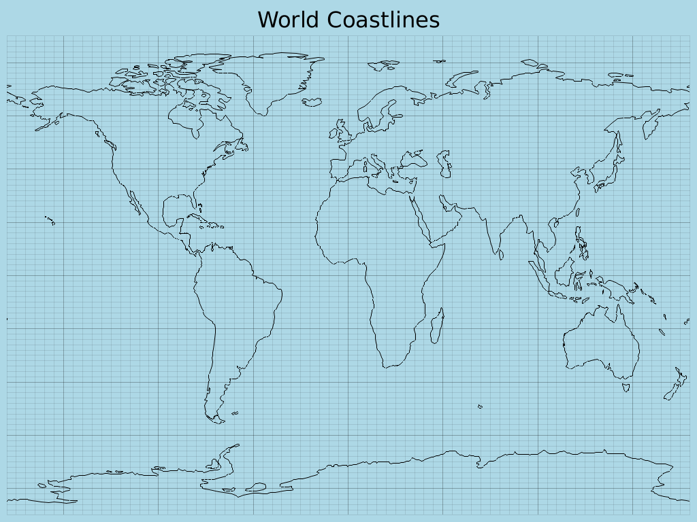
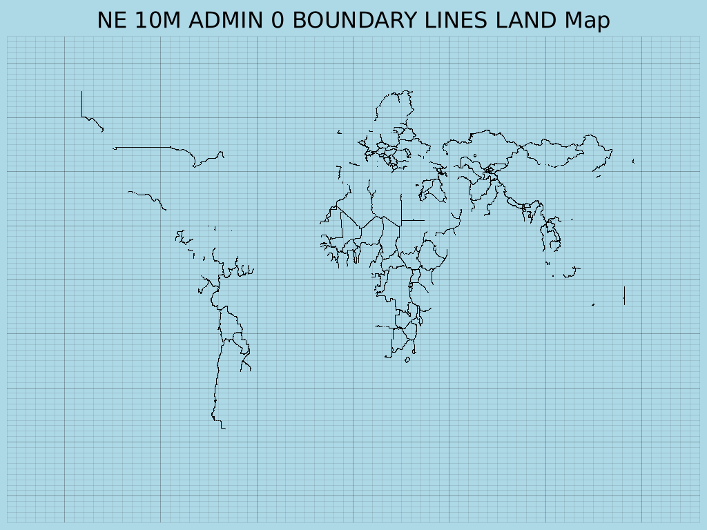
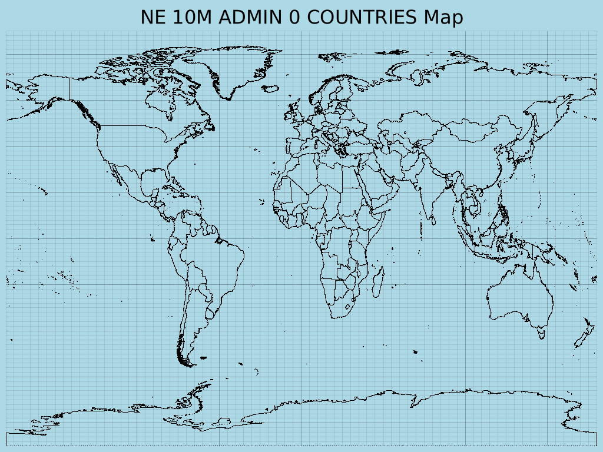
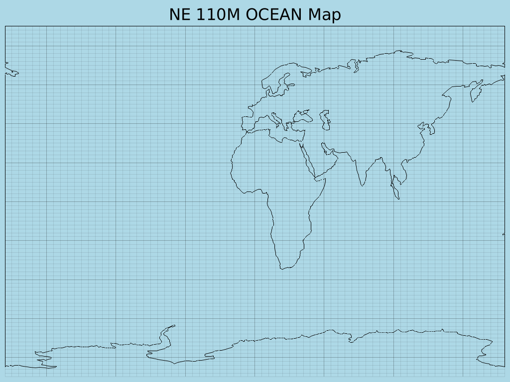
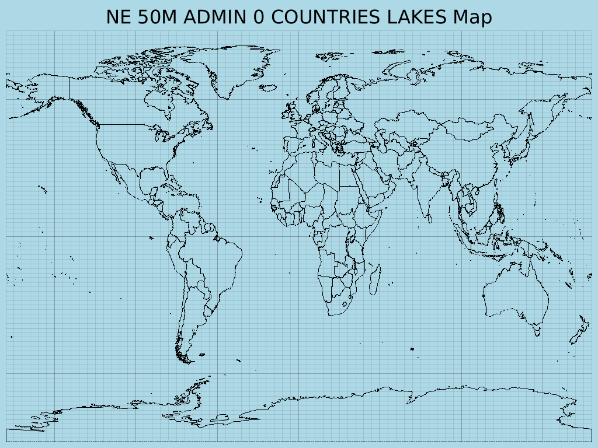

Visualizing Geographical Data with Rust
Exploring the world of geographical data visualization can be both
fascinating and complex. This project, the **Rust GeoJSON Mapper**,
aims to simplify this process by providing a robust and efficient tool
for plotting geographical features directly from GeoJSON files. Built
with Rust, it leverages the power of the `plotters` library for
rendering and the `geojson` crate for parsing, offering a clear
demonstration of geographical plotting capabilities in a performant
language.
Whether you're looking to visualize country borders, ocean lines,
rivers, or any other GeoJSON-formatted data, this tool provides a
straightforward way to generate high-quality PNG maps.
(Requires Rust and Cargo to run locally)
Output Examples
Here are some example maps generated by the Rust GeoJSON Mapper:
|

|
|
|

|

|
|

|

|
How It Works
The Rust GeoJSON Mapper operates by reading GeoJSON feature collections and then rendering them onto a 2D Cartesian plane using the `plotters` crate. Here's a breakdown of its core functionality:
- GeoJSON Parsing: It uses the `geojson` crate to parse `.geojson` files, supporting `LineString`, `MultiLineString`, `Polygon`, and `MultiPolygon` geometry types for drawing.
- File Selection: Upon running, the application lists all available GeoJSON files in the `data/geojson/` directory, allowing the user to select which map to generate via a command-line prompt.
- Dynamic Plotting: It dynamically determines the output filename and chart caption based on the selected GeoJSON file.
- Image Generation: The `plotters` library is used to create a PNG image, setting a light blue background for oceans and black lines for geographical features. The output images are saved to an `output/` directory, which is automatically created if it doesn't exist.
Getting Started
To run this project and generate your own geographical maps, follow these steps:
1. Prerequisites
Ensure you have **Rust and Cargo** installed on your system. You can
find installation instructions on
rust-lang.org.
Additionally, this project uses the `proj-sys` crate, which is a
low-level binding to the PROJ C library. You will need to install PROJ
development files and a C/C++ compiler.
sudo apt update
sudo apt install build-essential libproj-dev proj-bin clang libclang-dev
For other operating systems, refer to the `proj-sys` crate documentation or your system's package manager for equivalent packages.
2. Clone the Repository
git clone https://github.com/Harshit-Dhanwalkar/rust-geojson-mapper.git
cd rust-geojson-mapper3. Download GeoJSON Data
This application requires GeoJSON data to plot. You can obtain a
collection of world geographical data from the Natural Earth project.
Download the `geojson.zip` file directly from the `geojson` directory
of the `natural-earth-vector` repository:
https://github.com/nvkelso/natural-earth-vector/tree/master/geojson
After downloading, extract the contents of `geojson.zip` into a new
directory named `data/geojson/` in the root of this project. The final
structure should look like this:
rust-geojson-mapper/
├── Cargo.toml
├── src/
├── data/
│ └── geojson/
│ ├── ne_10m_admin_0_countries.geojson
│ ├── ne_110m_coastline.geojson
│ └── ... (other GeoJSON files)
└── output/
└── README.md
└── ...4. Build and Run
Navigate to the project's root directory (`rust-geojson-mapper/`) and execute:
cargo build
cargo runThis command will compile the project and then run the executable. The application will then list available GeoJSON files and prompt you to choose one to plot. Generated `.png` image files will be saved in the `output/` directory.
⚠️ Note: Ensure the `data/geojson/` directory contains `.geojson` files for the application to function correctly.